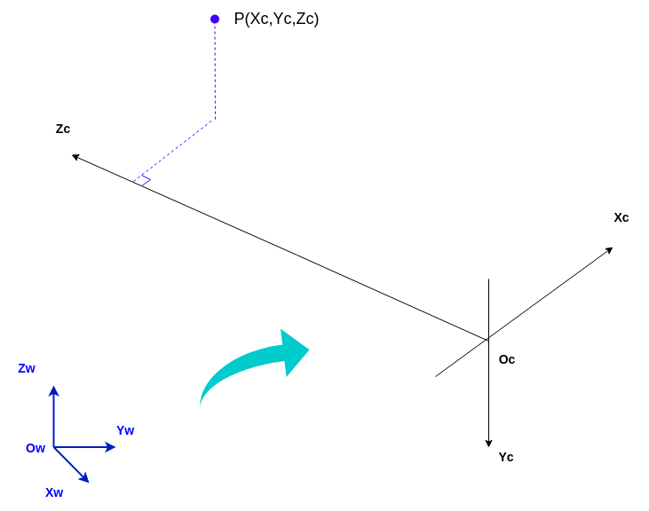
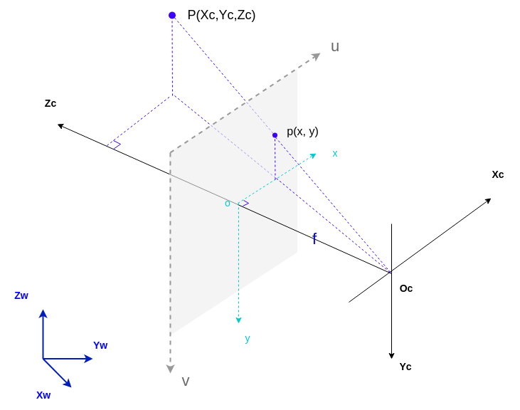
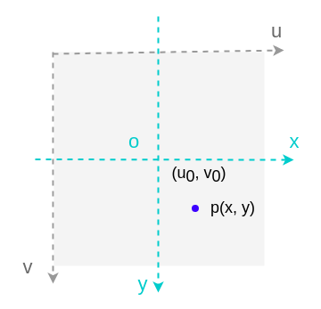

04-坐标变换¶
下面详细推导下3个坐标系之间的对应关系：
1. 世界->相机¶
X_wY_wZ_w >> X_cY_cZ_c

设已知某点P在世界坐标系中的坐标P_w=(X_w,Y_w,Z_w)^T，求其在相机坐标系中的坐标P_c=(X_c,Y_c,Z_c)^T，则可由世界坐标系，先经过平移t，然进行旋转R 得到P点在相机坐标系中的表达。
合并为齐次矩阵表达如下：
\overrightarrow {O}表示全0的向量，t为3x1的平移向量（Translation Vector），R为3x3的旋转矩阵（Rotation Matrix）。具体的旋转矩阵R如何生成，以后在外参标定中再展开。
2. 相机->图像¶
X_cY_cZ_c >> xy

要想知道相机坐标系与像素坐标系的关系，必须先引入图像坐标系，即先求出相机坐标系下的点P(X_c,Y_c,Z_c)在图像坐标系下的表达 p(x,y) 。利用相似三角形以及比例的原理，有以下推导及公式：
\dfrac {x}{f}=\dfrac {X_c}{Z_c}
\dfrac {y}{f}=\dfrac {Y_c}{Z_c}
继而
x=\dfrac {fX_c}{Z_c} and y=\dfrac {fY_c}{Z_c}
转换成矩阵相乘如下，其中f为有效焦距（光心到图像平面的距离），(X_c,Y_c,Z_c,1)^T是空间点P在相机坐标系的齐次坐标，(x,y,1)^T是图像点p在图像坐标系中的齐次坐标。
系数Z_c有时也称之为s（比例因子，不为0），其值越小，相同XY下的对应的xy越大（同一物体，理相机越近，成像越大）。
3. 图像->像素¶
xy >> uv
根据在图像中点p的坐标xy，得到其在像素坐标系即我们所能看到的图片像素中的位置uv

d_x像素宽度，d_y像素高度分别表示每个像素在水平u和竖直v方向上的实际物理尺寸（单位mm），即每个感光芯片的实际大小。由于单个像素点投影在图像平面上并非正方形而是矩形，故而d_x!=d_y。假设图像坐标系中心在像素坐标系的表达为u_0,v_0，图像上的投影点p(x,y)在像素坐标系下可有如下表示：
转换为矩阵相乘，(x,y,1)^T是投影点p在图像坐标系的齐次坐标，(u,v,1)^T是点p在像素坐标系中的齐次坐标，即：
综合: 世界->像素¶
综合以上三个转换，可合并为以下转换关系：
合并等式右边的前两个转换关系（相机->图像，图像->像素），直接表示为相机->像素的转换矩阵后，表达为：
其中，f_x=\dfrac {f}{d_x}, f_y=\dfrac {f}{d_y} 可以理解为焦距f分别在x, y轴方向等价的像素个数（每个像素的物理尺寸为dx \times dy，单位为mm）。以上等式右边，第一个矩阵（Intrinsic Matrix）即为相机内参，描述了物理世界与相片像素之间的对应关系；第二个矩阵（Extrinsic Matrix）即为相机外参，描述了世界坐标系（比如机械臂基座或小车）与相机的位置关系。
问题：
已知一款相机佳能80D及镜头参数如下：最高分辨率6000×4000，传感器尺寸22.3×14.9mm，焦距f=35mm，根据相机内参定义，估算相机的内参f_x,f_y,u_0,v_0
答案：
选中此区域即可见内容
fx = f / dx = 35 / (22.3/6000) = 9417.040358744
fy = f / dy = 35 / (14.9/4000) = 9395.973154362
u0= 6000 / 2 = 3000
v0= 4000 / 2 = 2000
:::tip
由于制造工艺等因素，相机像素坐标系中心未必与光轴经过的图像坐标系中心重合，即(u_0,v_0)并非是像素坐标系的中心，而是在中心附近某个位置，焦距及像素物理尺寸也非绝对精准，故而需要通过实际的内参标定过程，确定相机的内参矩阵。
:::